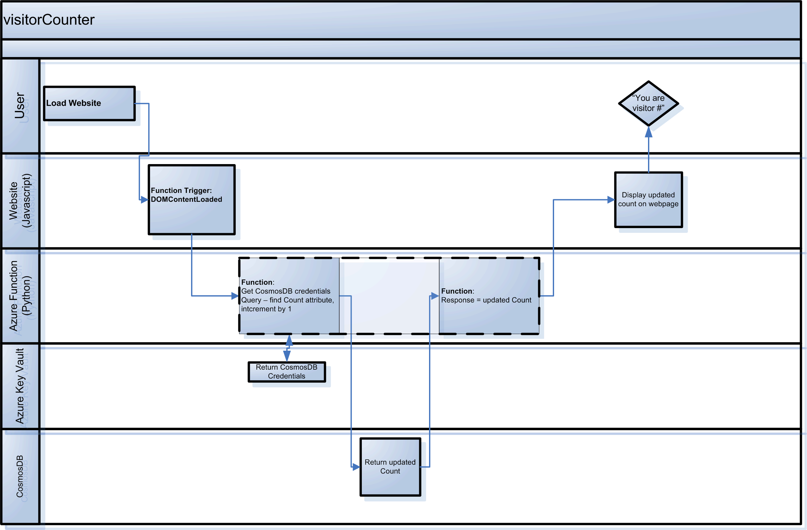

Cloud Resume Challenge
Project Summary
This project represents the beginning of my re-education and re-aquaintance with Cloud services after a pretty long absence. The project brief is defined in Forrest Brazeal's Cloud Resume Challenge. In essence the challenge requires us to build a simple website using as many cloud-related services as possible. I do believe that getting hands-on with tech is the best way to learn and come up to speed with what’s possible.
- My objectives for completing this project are:
- Re-educate myself on the latest Cloud concepts and practices (PaaS, serverless, CI/CD,)
- Build a thing using as many current Cloud services from a prominent provider as possible
- Get exposed to the prevalent coding languages used today (HTML/CSS, Javascript, Python)
- The high level components in this solution are:
- Write the HTML/CSS code for the website (based on a project from John Smilga's "HTML&CSS Tutorial and Projects Course")
- Domain name registerd with Cloudflare (DNS services only - no proxy) DNSSEC enabled
- Azure storage account created and configured for delivery of static web content
- Visitor Counter app written in Python, deployed as an Azure Function.
- CosmosDB database to store Visitor Counter app data.
- Azure Key Vault to store CosmosDB credentials and endpoint data.
- Github repository for source code control and code CI/CD.
- Visual Studio Code with Azure/Github extensions.
The deployment model for this solution looks something like this:

The Visitor Counter process flow looks roughly like this: 
- Key learnings from this project were:
- Cloud has certainly democratized IT. Its pretty impressive that you can now have a website, app runtime environment, storage, database and secrets management services without having even one server OS to worry about, and all for the princely sum of $0.17/mth from Microsoft!
- Resilience, patience and some humility were required to swallow the number of new concepts and technologies that went into this solution. Chipping away at it every day helped to make sure I felt that progress was being made, no matter how small.
- Visual Studio Code plugins for Azure, Python and Github made life really easy. I could create and test the Azure Function locally with the assistance of the Azurite emulator, and the Azure plugin translated any local json settings to Azure Application Settings when deploying to Azure itself. Github Actions mean I can synch code and rebuild my entire website with a single command.
- Regarding CosmosDB, I want to acknowledge a fellow challenger techbrett for the SQL query solution, as its a much more databasey way of doing things than the Python code I was struggling with.
Back To Top